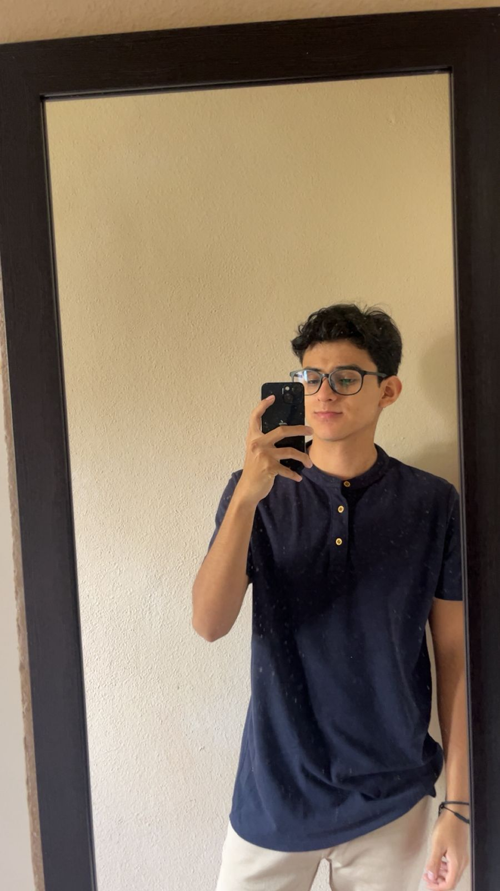

Estudiante de Ingeniería en Sistemas
Mi nombre es Bryan Cabrera, soy estudiante de Ingeniería en Sistemas en la Universidad Mariano Gálvez, jornada plan diario. Nací el 23 de julio de 2007 y actualmente me encuentro desarrollando mis conocimientos en distintas áreas relacionadas con la tecnología, programación y desarrollo de sistemas.
Decidí estudiar esta carrera porque siempre me ha llamado la atención cómo funciona la tecnología y todo lo relacionado con computadoras, software y redes. Considero que Ingeniería en Sistemas es una carrera que constantemente impulsa el aprendizaje, la creatividad y la resolución de problemas.
A lo largo de este semestre he logrado fortalecer habilidades técnicas y personales mediante diferentes proyectos, prácticas y trabajos realizados en los cursos, permitiéndome adquirir más experiencia dentro del área tecnológica.